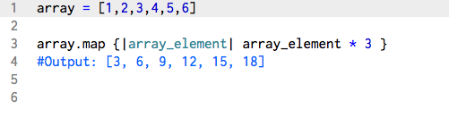
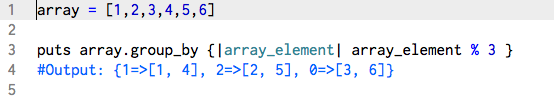
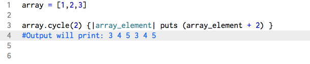

Featured Methods: map, group_by, cycle
Technical Blog
August 21st, 2015
For your understanding, but mainly for my own, I will be going over various methods that I either have just used for the first time, or methods that Dev Bootcamp highlighted in particular this week. For this week, they are the map, group_by, and cycle enumerable methods.
Key things to understand:
Like all enumerable methods, when called, this method will apply itself to every element in a set. This includes every character of a string, element in an array, and key/pair value of a hash. The block is what you want it to do to every element, the result of which will be placed in a new array that needs to be assigned to something, printed, or returned.
Map {|obj| block} --> array
Input: Set of Objects
Output: New Array populated with the block
The map method will iterate through a set of objects and return a new array that is populated by the results of the block. If not block is given, an enumerator is returned instead.
In this example, the method goes through each element in the array and multiplies it by 3. The results are then pushed into a new array.
Group_by {|obj| block} → a hash
Input: Set of Objects
Output: New Hash organized where keys are the results of the block, whose values are the elements that gave that result
The group_by method will iterate through a set of objects and run each element through the block. The result of which will become a key, and if there are more than one element that gives the same result, the element will be placed in an array with the other elements that gave the same result.
In this example, we find the modulus of each element in the array when divided by 3. For this array, there are several elements that give the same value (the modulus of elements 3 and 6 result in 0). As a result, each result being its own key, will have a value pair that is both 3 and 6.
Cycle (n=nil) {|obj| block }
Input: Set of Objects, “n” needs an integer
Output: Returns nil
The cycle method will iterate through a set of objects and run the block as many times as dictated by the integer given to the “n” variable (within the parentheses). If no value is given to n, it will default to nil and the method will run forever. This method does not return anything, thus its results cannot be saved into a variable.
